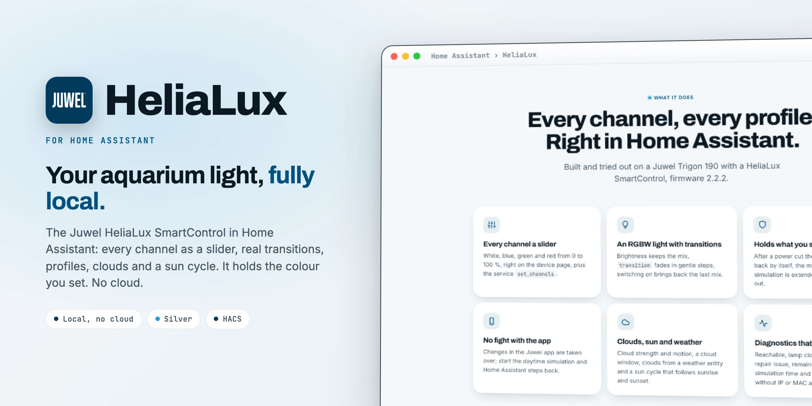

Juwel aquarium light in Home AssistantJuwel-Aquarienlicht in Home Assistant
HeliaLux talks to the Juwel HeliaLux SmartControl over its own web server: every channel as a slider, real transitions, profiles, clouds and a sun cycle, and it keeps the colour Home Assistant set. Robust, complete, no cloud.HeliaLux spricht mit der Juwel HeliaLux SmartControl über ihren eigenen Webserver: jeder Kanal als Schieberegler, echte Übergänge, Profile, Wolken und Sonnenverlauf, und sie hält die Farbe, die Home Assistant eingestellt hat. Robust, vollständig, ohne Cloud.

Just arrivedGerade neu
The latest releases make the integration tougher against odd answers from the lamp and more careful with your profiles.Die letzten Releases machen die Integration robuster gegen seltsame Antworten der Lampe und vorsichtiger mit deinen Profilen.
Before the first point of a profile the value of that point applies, exactly as on the lamp, instead of a wrongly extrapolated one.Vor dem ersten Punkt eines Profils gilt der Wert dieses Punkts, genau wie an der Lampe, statt eines falsch hochgerechneten.
Names with characters the lamp cannot store are rejected before saving, so a profile on the lamp is never mangled.Namen mit Zeichen, die die Lampe nicht speichern kann, werden vor dem Speichern abgelehnt, ein Profil in der Lampe geht so nie kaputt.
Clouds from weather convert knots and feet per second correctly.Wolken nach Wetter rechnen Knoten und Fuß pro Sekunde richtig um.
Holding the state starts only once, even for two polls in quick succession.Das Halten des Zustands startet nur einmal, auch bei zwei Abfragen kurz hintereinander.
Releases count year.month.number: 26.10.2 is the second release of October 2026.Releases zählen Jahr.Monat.Nummer: 26.10.2 ist das zweite Release im Oktober 2026.
Everything that changed, release by release: the changelog.Alles, was sich geändert hat, Release für Release: das Changelog.
What it doesWas sie kann
Built and tried out on a Juwel Trigon 190 with a HeliaLux SmartControl, firmware 2.2.2.Gebaut und ausprobiert an einem Juwel Trigon 190 mit HeliaLux SmartControl, Firmware 2.2.2.
White, blue, green and red from 0 to 100 %, right on the device page, plus the service set_channels.Weiß, Blau, Grün und Rot von 0 bis 100 %, direkt auf der Geräteseite, dazu der Dienst set_channels.
Brightness keeps the mix, transition fades in gentle steps, switching on brings back the last mix.Helligkeit behält die Mischung, transition blendet in sanften Schritten, Einschalten bringt die letzte Mischung zurück.
After a power cut the colour comes back by itself, the manual colour simulation is extended before it runs out.Nach einem Stromausfall kommt die Farbe von selbst zurück, die manuelle Farbsimulation wird vor dem Ablaufen verlängert.
Changes in the Juwel app are taken over; start the daytime simulation and Home Assistant steps back.Änderungen in der Juwel-App werden übernommen; startet die Tagsimulation, gibt Home Assistant ab.
Cloud strength and motion, a cloud window, clouds from a weather entity and a sun cycle that follows sunrise and sunset.Wolkenstärke und -zug, ein Wolken-Fenster, Wolken nach einer Wetter-Entität und ein Sonnenverlauf nach Sonnenauf- und -untergang.
Reachable, lamp clock offset with a repair issue, remaining colour simulation time and a download without IP or MAC address.Erreichbar, Uhrabweichung der Lampe mit Reparatur-Hinweis, Restzeit der Farbsimulation und ein Download ohne IP- oder MAC-Adresse.
ProfilesProfile
get_profile and set_profile with up to 16 points, saved permanently in the lamp.get_profile und set_profile mit bis zu 16 Punkten, dauerhaft in der Lampe gespeichert.EntitiesEntitäten
All IDs start with the tank name, for example light.trigon_190_light, and match the previous integration. Names in English and German.Alle IDs beginnen mit dem Beckennamen, zum Beispiel light.trigon_190_light, und entsprechen der bisherigen Integration. Namen auf Deutsch und Englisch.
| PlatformPlattform | EntityEntität | NoteHinweis |
|---|---|---|
| LightLicht | light | RGBW, absolute channel values, transitionRGBW, absolute Kanalwerte, Übergang |
| NumberZahl | white blue green red | One channel each, 0 to 100 %Je ein Kanal, 0 bis 100 % |
| SwitchSchalter | manual_color_simulation manual_daytime_simulation keep_manual | Home Assistant or the lamp's profile decidesHome Assistant oder das Profil der Lampe bestimmt |
| SwitchSchalter | sun_cycle acclimatization weather_clouds | Rewrite the active profile at nightSchreiben das aktive Profil nachts um |
| SelectAuswahl | profil profile_monday … _sunday | All days or per weekdayAlle Tage oder je Wochentag |
| SelectAuswahl | cloud_intensity cloud_motion | Clouds in the active profileWolken im aktiven Profil |
| TimeZeit | cloud_from cloud_to sun_earliest sun_latest | Cloud window and sun cycle limitsWolken-Fenster und Grenzen des Sonnenverlaufs |
| Sensor | current_profile device_time profiles | Attributes curve, profile_now, weekAttribute curve, profile_now, week |
| DiagnosticsDiagnose | reachable clock_offset color_simulation_remaining | With the last errorMit dem letzten Fehler |
How it worksWie es funktioniert
State every 15 seconds, profile names every 10 minutes. One request after the other, because the lamp only handles one at a time.Zustand alle 15 Sekunden, Profilnamen alle 10 Minuten. Eine Anfrage nach der anderen, denn die Lampe verträgt nur eine gleichzeitig.
It replaces MrSleeps' Juwel HeliaLux integration with the same domain and IDs. A rewrite, no code taken over; thanks for the groundwork.Sie ersetzt die Juwel-HeliaLux-Integration von MrSleeps mit gleicher Domain und gleichen IDs. Ein Neubau ohne übernommenen Code; danke für die Vorarbeit.
InstallInstallation
As a custom repository.Als benutzerdefiniertes Repository.
https://github.com/SH1FT-W/helialuxNew IP address later? Three dots, Reconfigure.Später eine neue IP-Adresse? Drei Punkte, Neu konfigurieren.
No cloud account, no YAML.Kein Cloud-Konto, kein YAML.
Tested with firmware 2.2.2 (hardware 1.1C) and four channels. Lamps with fewer channels get fewer sliders.Getestet mit Firmware 2.2.2 (Hardware 1.1C) und vier Kanälen. Lampen mit weniger Kanälen bekommen weniger Regler.
Three old entities stay behind as "no longer provided" (sensor.<name>_combined_sensor and two duplicate binary_sensor.<name>_manual_*) and can be deleted.Drei alte Entitäten bleiben als „nicht mehr bereitgestellt“ übrig (sensor.<name>_combined_sensor und zwei doppelte binary_sensor.<name>_manual_*) und können gelöscht werden.
Download the latest release, copy its custom_components/juwel_helialux folder into /config/custom_components/, restart Home Assistant and add the lamp.Lade das neueste Release herunter, kopiere den Ordner custom_components/juwel_helialux nach /config/custom_components/, starte Home Assistant neu und füge die Lampe hinzu.
Good to knowGut zu wissen
Usually the lamp's web interface is still open in a browser. While it is open, it sends its own slider values every second and overwrites Home Assistant.Meist ist die Weboberfläche der Lampe noch im Browser offen. Solange sie offen ist, schickt sie jede Sekunde ihre eigenen Reglerwerte und überschreibt Home Assistant.
The lamp sets its clock by NTP. Without internet access UDP 123 has to be allowed outwards. From 10 minutes off, a repair issue appears.Die Lampe stellt ihre Uhr per NTP. Ohne Internetzugang muss UDP 123 nach außen erlaubt sein. Ab 10 Minuten Abweichung erscheint ein Reparatur-Hinweis.
The state is polled every 15 seconds (5 to 300 in the options). The lamp only handles one request at a time, so all commands run one after the other.Der Zustand wird alle 15 Sekunden abgefragt (5 bis 300 in den Optionen). Die Lampe verträgt nur eine Anfrage gleichzeitig, alle Befehle laufen nacheinander.
Sun cycle and acclimatization recalculate the active profile every night at 03:05. Home Assistant keeps the original and writes it back when both are switched off.Sonnenverlauf und Eingewöhnung rechnen das aktive Profil jede Nacht um 03:05 neu. Home Assistant merkt sich das Original und schreibt es zurück, wenn beide aus sind.
The lamp did not answer three times in a row. Check its IP address in your router and enter it with Reconfigure. Single lost requests are bridged.Die Lampe hat dreimal hintereinander nicht geantwortet. IP-Adresse im Router prüfen und über Neu konfigurieren eintragen. Einzelne verschluckte Anfragen werden überbrückt.
No, each lamp is set up by its IP address, one lamp per entry.Nein, jede Lampe wird per IP-Adresse eingerichtet, eine Lampe je Eintrag.
Download the diagnostics (Settings, Devices & services, Juwel HeliaLux, three dots) and attach them to a GitHub issue. IP address and MAC address are left out.Diagnose herunterladen (Einstellungen, Geräte & Dienste, Juwel HeliaLux, drei Punkte) und an ein GitHub-Issue hängen. IP- und MAC-Adresse sind nicht enthalten.
HeliaLux
One integration, every channel, no cloud.Eine Integration, jeder Kanal, keine Cloud.